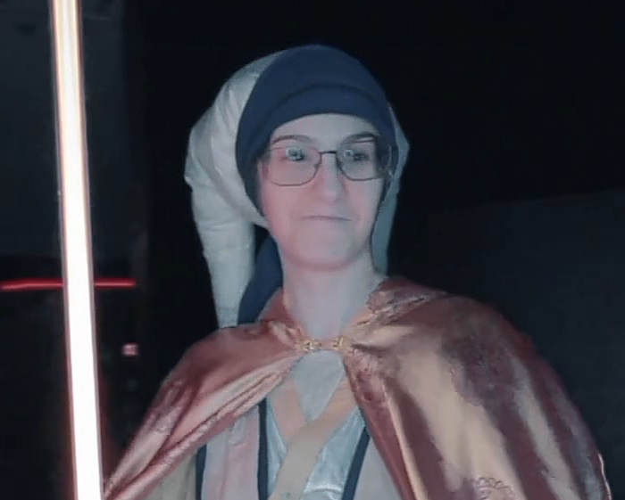

Oh, boy, here we go....
I know the home page had a lot about me already, but I'm a person, and thus, very multifaceted. I figured you might want a page for more about me!
What am I like as a person?
Hard working, dedicated....I mean, yes, I am, but those are dime a dozen as descriptors and I'm trying to seem interesting here. I'm definitely down to be friendly, even if sometimes it takes a minute to get the dynamics of a conversation sorted. In tech, a lot of us can relate to that, I'd say, right? I do, however, take care to ensure I'm able to maintain good working relationships with people, be polite and kind, and do my best to be professional. I could be a genius with Java, but if I'm abrasive, it won't be enjoyable to work with me, and those soft-skills are valuable.
I will say this as an indicator of my interpersonal skills and relationships - at my last position, I started as cashier, and worked up to General Manager. I didn't do it by shoving my way up and pushing people down - in fact, I didn't even aim to take that role to begin with. Circumstances just occured that put me in the position to be the best suited to take over when the previous manager left, and I cared too much about my place of work and my coworkers to turn down the role. My coworkers deserved to work in a place they enjoyed, and it be run by someone that was willing to do the neccesary work while not thinking of themselves as better than the people under them. I always viewed that role as a position of service - to them, to our customers. The manager who trained me lived that out at work, and I was determined to live up to her standards even after she left.
I would bring that same drive, dedication and humility to any role I fufill. I might be the person on the job, but that never means I am "better" than anyone else - I'm always able to learn, and I'm always willing to try something new if it'll help finish whatever we're working on, whether that's an issue with a computer to be fixed or a new piece of software to develop. I made a slight joke abot it a minute ago, but I was raised to do my best and put my full effort to whatever I'm doing, and that's something that has served me well in previous experiences.
Enough about work personality....what about me as a person outside of work?
Enthusiastic, fun, and friendly especially once I feel comfortable (not at the expense of responsibilities, though!). I'm not always a social butterfly, but in the right enviroments I love to make friends, go out with friends and generally have a good time. I'm a long-time attendee of DragonCon, down in Atlanta, Georgia, maybe you've heard of this local convention... that has over 70k attendee's anually?
 Yes, that is me in that picture! And yes, I did make that outfit (mostly. I have yet to make pants, or shoes, but I might be able to tackle pants here - the headpiece in the picture above, ironically, helped get the "how" of how to make pants click, of all things), and I've made a few other cosplay outfits too. I started, back in my early teens, with a run to the local Goodwill and what I had in my closet for my first outfit, and now, I'm planning on making a full Mandalorian suit sometime in the next few years. The goal is before next DragonCon, but I'm not going to beat myself up if it doesn't happen. Real life comes first.
Cosplay - and conventions and fandom as a whole - has been an important part of my life, and has impacted me significantly enough to where I easily credit it to the development of my stregnths as a person. I wouldn't be as good of a writer as I can be without having done some fandom-related writing, and I wouldn't be anywhere near as socialable if I hadn't been able to attend conventions with other just as nerdy people as me, get comfortable and then branch out from there. The commitment I have to finishing things is in part, due to my commitment to finishing my cosplays. Maybe a smaller part than how I was raised, but developing the patience, ethic and pacing of work and rest to not burn out is something I have easily improved as part of working on cosplays. I'm also a part of local community servers online as a result of being in fandom servers, one for state weather, one for tropical, one for local events, one even for local developers and other folks in tech-related positions. I have made many friends as a part of fandom communities and their impact on my life and what I've chosen to do as a career can't be overlooked.